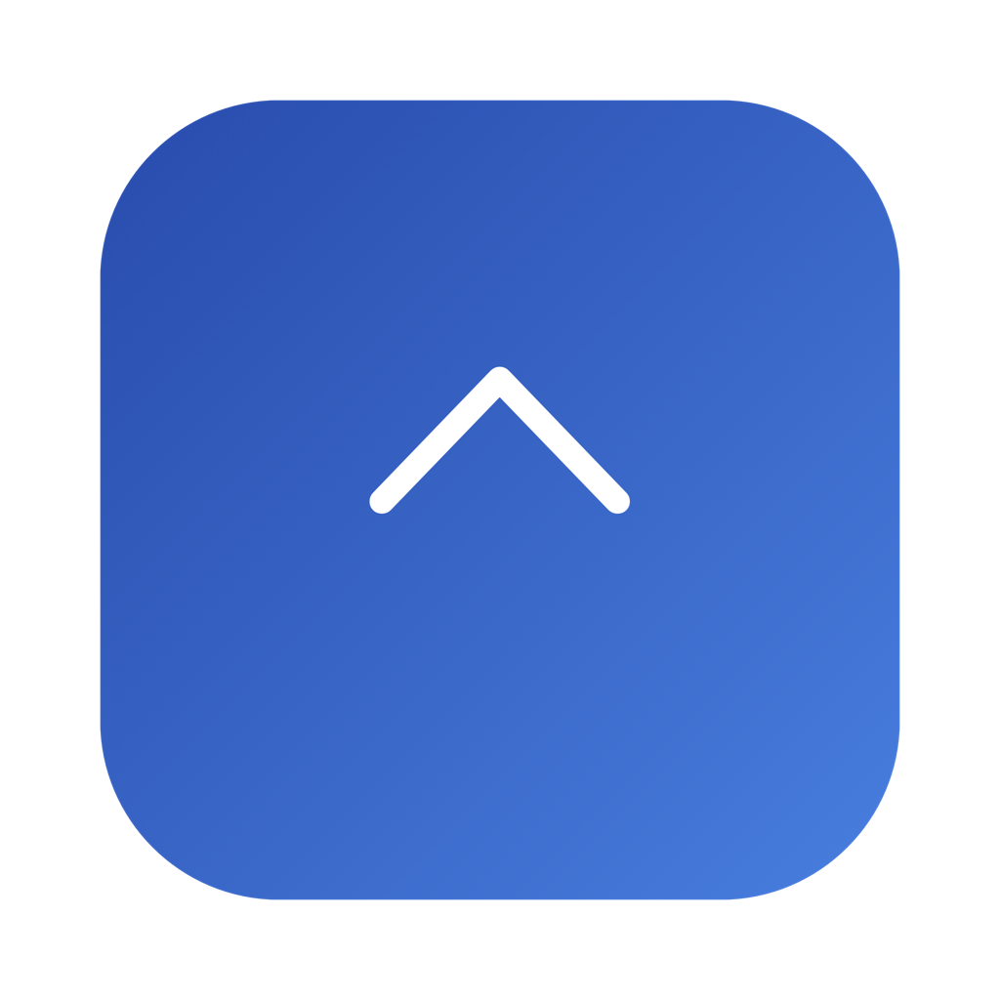

Sorgen um Sprachdaten?
Erkennung und KI-Überarbeitung laufen auf dem Mac, statt tägliches Diktat an einen Cloud-Dienst zu senden.
PRIVAT · LOKAL · KI
Tastenkürzel halten, sprechen und loslassen, um in jeder App zu schreiben. Qwen transkribiert und überarbeitet lokal, erkennt 30 Sprachen und unterstützt Apples On-Device-Übersetzung.

Hört zuLoslassen zum Transkribieren
FÜR ECHTE PROBLEME ENTWICKELT
Cloud-Spracheingabe kann vertrauliche Sprache übertragen, Verzögerung verursachen, Rohtext liefern und Kürzel stören. CoveType wurde gegen diese Probleme entwickelt.
Erkennung und KI-Überarbeitung laufen auf dem Mac, statt tägliches Diktat an einen Cloud-Dienst zu senden.
Lokale Modelle vermeiden API-Rundreisen und funktionieren offline.
Ein optionales lokales Qwen-Modell verbessert Zeichensetzung und Formulierungen.
Taste oder Kombination und Haltedauer schützen Control-C und andere normale Kürzel.
| Funktion | CoveType | Typisches Cloud-Diktat |
|---|---|---|
| Sprache zu Text | Lokal auf dem Mac | Audio wird hochgeladen |
| KI-Überarbeitung | Lokales Qwen-Modell | Oft Cloud-LLM |
| Übersetzung | Apple On-Device | Oft entfernte API |
| Konto | Nicht nötig | Oft nötig |
| Quellcode | Open Source GPLv3 | Meist proprietär |
FUNKTIONEN
Qwen3-ASR 0.6B 8-bit läuft auf Apple Chips und erkennt automatisch 30 Sprachen.
Qwen3.5 0.8B 4-bit verbessert Zeichensetzung, Satzgrenzen und gesprochene Formulierungen ohne Cloud-Schreib-API.
Sprechen Sie eine Sprache und geben Sie eine andere über Apple Translation und geladene On-Device-Sprachpakete aus.
Erfassen Sie Taste oder Tastenkombination und Haltedauer, damit normale Kürzel keine Aufnahme starten.
Beim Loslassen setzt CoveType das Ergebnis an der Cursorposition der aktuellen App ein.
Eine kleine Atemlampe zeigt Leerlauf, Zuhören, Verarbeitung und Abschluss. Autostart bei Anmeldung ist möglich.
DATENSCHUTZ UND SICHERHEIT
Die normale Transkription und KI-Überarbeitung rufen keine Cloud-ASR- oder Schreib-API auf. Aufgenommen wird erst, wenn das konfigurierte Kürzel bewusst gehalten wird.
Temporäre Aufnahmen werden auf dem Mac verarbeitet und nach Abschluss gelöscht.
Qwen3-ASR und Qwen3.5 liegen in den lokalen CoveType-App-Daten.
CoveType benötigt keine Anmeldung und synchronisiert keinen Transkriptverlauf.
Das Mikrofon erfasst Sprache; Bedienungshilfen dienen dem globalen Kürzel und der Texteingabe in die aktive App.
Bei der Erstinstallation werden festgelegte Laufzeit und Modelle geladen. macOS lädt benötigte Apple-Translation-Sprachpakete; eine konfigurierte Updateprüfung kann den Veröffentlichungsserver kontaktieren. Normale Transkription und Überarbeitung bleiben lokal.
Standardmäßig aktiviert und im Feedback-Fenster des Clients abschaltbar. Höchstens einmal in 24 Stunden sendet CoveType eine zufällige Installations-ID, App-Version, macOS-Version und Prozessorarchitektur per HTTPS. Cloudflare bestimmt nur das Land; CoveType speichert die rohe IP nicht. Audio, Transkripte und eingegebener Text sind nie enthalten.
OPEN SOURCE ENTWICKELT
Der macOS-App-Code von CoveType ist unter GPLv3 öffentlich. Prüfen Sie Aufnahme, Modellausführung, Netzwerkzugriffe und Texteingabe.
Quellcode auf GitHub ansehenSwift-Client, lokale KI, Installer, Updatekanal und Berechtigungen sind einsehbar.
Alltägliche Spracheingabe braucht keine Registrierung, Abo-Identität oder Synchronisierung.
Installation, Übersetzungspakete, Updates und GitHub können online sein; Erkennung und Überarbeitung bleiben lokal.
SPRACHUNTERSTÜTZUNG
Dies ist die exakte Liste des installierten Qwen3-ASR-Modells. Kantonesisch wird getrennt von Chinesisch geführt. Vor der Aufnahme ist keine Sprachauswahl nötig.
30 Erkennungssprachen bedeuten nicht automatisch dieselben 30 Übersetzungsziele. Verfügbare Apple-Sprachpaare hängen von macOS-Version, Region und installierten Paketen ab.
DOWNLOAD UND INSTALLATION
CoveType-Installer-ZIP laden und entpacken.
„Install CoveType.command“ öffnen. App, isolierte Laufzeit, Modelle und Autostart werden eingerichtet.
Der Anleitung in Systemsprache folgen und Mikrofon sowie Bedienungshilfen aktivieren. Der Installer prüft beides.
SHA-256: cd7e1c336d7aadc10fc101344164aa2111a6c88af13559a4447553d659542cfb
WINDOWS-STATUS
Der Client nutzt macOS-spezifisches AppKit/SwiftUI, AVFoundation, Bedienungshilfen, Apple Translation und MLX. Er kann nicht für Windows kopiert oder neu verpackt werden.
Das Quellprojekt enthält eine Windows-10/11-x64-Einrichtung für das offizielle Qwen3-ASR-PyTorch-Backend und eine Browser-Mikrofondemo. Das ist ein lokaler Erkennungstest, noch keine systemweite Tray-Eingabe-App.
Nötig sind ein eigener .NET-8-Client, WASAPI-Aufnahme, globale Windows-Tasten und SendInput, PyTorch/ONNX-Laufzeit, lokale Übersetzung, signierter Installer und Tests auf echten Windows-10/11-Geräten. Praxisziel: x64, mindestens 8 GB RAM, 16 GB empfohlen, 8–10 GB frei; NVIDIA-GPU optional, aber deutlich schneller.
DETAILS
Nein. Die aktuelle Version ist ein Menüleisten-Sprachwerkzeug. Das globale Haltekürzel fügt Text in die aktive App ein, ohne die Eingabequelle zu wechseln.
macOS verlangt ihn für globale Kürzel und Texteingabe in eine andere App. Er kann jederzeit in den Systemeinstellungen entzogen werden.
Das kleine Qwen3.5-Modell ist mehrsprachig, aber nicht in allen 30 Sprachen gleich gut. Erkennung und Überarbeitungsqualität sind getrennt; wichtige Sprachen sollten getestet werden.
Der CoveType-App-Code steht unter GPLv3. Qwen-Modelle, Python-Pakete und Apple-Frameworks haben eigene Lizenzen und Bedingungen.